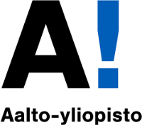

Word Comparison through Semantic Projection
Welcome to the word comparison experiment, based on the work of Grand et al. [1]. Describe a dimension by thinking of words that create a contrast. Make sure to enter them "pairwise", meaning that the first negative word is the antonym of the first positive word. Finally, enter some words to be compared along the dimension.
Examples
Here are some example dimensions to try:
- age: old ancient elderly - young youth child
- arousal: interesting exciting fun - boring unexciting dull
- cost: expensive costly fancy - inexpensive cheap budget
- danger: dangerous deadly threatening - safe harmless calm
- gender: male masculine man - female feminine woman
- intelligence: intelligent smart wise - stupid dumb idiotic
- location: indoor indoors inside - outdoor outdoors outside
- loudness: loud deafening noisy - soft silent quiet
- political: democrat liberal progressive - republican conservative redneck
- religiosity: religious spiritual orthodox - atheist secular agnostic
- size: large big huge - small little tiny
- speed: fast speedy quick - slow sluggish gradual
- temperature: hot warm tropical - cold cool frigid
- valence: good great happy - bad awful sad
- wealth: rich wealthy privileged - poor poverty underprivileged
- weight: heavy fat thick - light skinny thin
- wetness: wet water ocean - dry country land
Where does the data come from?
The corpus that was used to create the model is a crawl of Wikipedia done in 2014, plus the Gigaword 5 corpus of the Linguistic Data Consortium. The model contains 300-dimensional vectors for 6 billion words and phrases, although in this example only the top 100k most common words are present to reduce download times. The phrases were obtained using a simple data-driven approach described in [2]. The model is available here: https://nlp.stanford.edu/projects/glove/.
More information about the comparison algorithm
To be clear, Aalto University's CMHC lab has nothing to do with the comparison algorithm, we just showcase it on our website. The comparison algorithm was published here:
[1]Gabriel Grand, Idan Asher Blank, Francisco Pereira, and Evelina Fedorenko. Semantic projection recovers rich human knowledge of multiple object features from word embeddings. Nature Human Behavior, 2022.
The algorithm works by first creating a difference vectors between the GloVe vectors of two words (labeled "positive" and "negative" in the interface above). Then, the GloVe vectors of each of the words to compare are projected onto the difference vector. To obtain a more reliable difference vector, we can average across multiple difference vectors, hence you are able to specify multiple "positive" and "negative" words in the interface.
More information about the GloVe algorithm
GloVe is an unsupervised learning algorithm for obtaining vector representations for words. Training is performed on aggregated global word-word co-occurrence statistics from a corpus, and the resulting representations showcase interesting linear substructures of the word vector space.
[2]Jeffrey Pennington, Richard Socher, and Christopher D. Manning. GloVe: Global Vectors for Word Representation. 2014.
